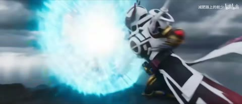

← 案例图谱H11 / 局部机制／局限参考
因为会时停，所以耗时0秒！带上耳机，见识一下反派的漆黑意志！
笔龙XDDD · 65.9万播放快照 · ≥10万 · B站原作 ↗
方向拉丝、旋涡、扫描线、通道偏移与源动画攻击动作结合，属于动态混剪语汇。
 约85.002秒 · 案例代表帧
约85.002秒 · 案例代表帧从画面里找依据
这一例先看什么
方向拉丝、旋涡、扫描线、通道偏移与源动画攻击动作结合，属于动态混剪语汇。
审美判断
人物脸与手势在彩边/重影中仍有主焦点，白亮碎片和倒带符号为强调；不凭闪帧推全片可读性。
迁移到自己的题材
战斗、运动、竞速、预告、产品性能演示、情绪冲突的高潮。
教学提问：观众能指出谁在攻击、朝哪边、是否击中吗？哪些是原素材的动作，哪些才是新增剪接或合成？
带画面的分析单元
图像标出取样时间，对应观察中的关键状态。单帧不能独立证明运动，连续性请结合摘录。表达作用与应用场景是教学解读，复现路线是建议，不是原作者工程还原。
分析单元 01 / 8—20秒
RGB边缘色散／重影叠化
实际观察
概览可见人物边缘红青彩边，16秒人物手臂有半透明重影。
表达作用（教学解读）
把短暂破坏作为失控、断裂、冲突或数字材质的提示。
具体应用场景
赛博题材、记忆中断、身份不稳、高潮强调；也可短时掩护连接。
复现建议（非原作者工程还原）
分离RGB通道少量位移，复制前后帧降低不透明度。
直出判断：基础版容易；未确认原片具体实现
常见误用：全程持续导致麻木；色散让脸和字长期看不清；把所有亮度变化算成切镜。
分析单元 02 / 32—40秒
方向模糊／径向旋转变形
实际观察
32秒横向拉丝，40秒中心形成旋涡状扭曲与模糊；只据概览不认定完整转场轨迹。
表达作用（教学解读）
复杂表演与形体变化通常来自镜头素材本身。先明确事件与连续性要求，再选择拍摄、原动画、生成或三维等获取路线。
具体应用场景
近身动作、幻想形变、角色交互、复杂环境事件。已有源片时先辨认并保留动作因果，不把全部动作记作后期增量。
复现建议（非原作者工程还原）
方向模糊、缩放模糊、极坐标或旋涡位移。
直出判断：简单模糊容易；复杂连续形变需着色器调试
常见误用：连续性靠闪光掩盖；人手/道具无因果变化；把模型内部运镜当全部剪辑能力；承诺单次稳定长表演。
分析单元 03 / 48—48秒
倒带符号／扫描线／画面波形弯曲
实际观察
左上有双左箭头，人物画面呈横向扫描线和弯曲轮廓。
表达作用（教学解读）
把短暂破坏作为失控、断裂、冲突或数字材质的提示。
具体应用场景
赛博题材、记忆中断、身份不稳、高潮强调；也可短时掩护连接。
复现建议（非原作者工程还原）
符号叠加、逐行水平正弦偏移、隔行亮度网纹。
直出判断：容易；倒带符号不证明真实倒放已核验
常见误用：全程持续导致麻木；色散让脸和字长期看不清；把所有亮度变化算成切镜。
分析单元 04 / 52—76秒
棱镜色散／发光粒子／通道错位
实际观察
52秒高亮碎片带彩虹边；76秒人物边缘红蓝分离。原动画特效与后加效果归属尚未分离。
表达作用（教学解读）
把短暂破坏作为失控、断裂、冲突或数字材质的提示。
具体应用场景
赛博题材、记忆中断、身份不稳、高潮强调；也可短时掩护连接。
复现建议（非原作者工程还原）
高亮提取、模糊加法合成、通道位移；规则粒子可程序生成。
直出判断：基本机制容易；原作复杂粒子美术需素材
常见误用：全程持续导致麻木；色散让脸和字长期看不清；把所有亮度变化算成切镜。
分析单元 05 / 84—86秒
动作牵引快切／近景冲击
实际观察
拳击中人物由侧向双人构图变正面，随后眼部极近景、反打及受击；多处保留原动画动作。
表达作用（教学解读）
通过变化与稳定的比例让信息有轻重。视觉密度来自切镜、版式与局部动画三个层面，不只靠刀数。
具体应用场景
所有形式；尤其高潮前的蓄力、解释段的阅读、回忆段的停留和快慢对照。
复现建议（非原作者工程还原）
裁切现有动作素材，匹配方向和冲击点；短模糊或曝光辅助。
直出判断：剪接容易；不能直接生成高质量人物战斗动画
常见误用：全片等密度；把闪帧当新镜；高切速被当成质量分；没有稳定段供观众理解。
分析单元 06 / 105.2—107.2秒
荧光轮廓／多段景别替换／光带扫过
实际观察
绿色平面切红白人物出拳，再切受击面部，最后双人构图，末尾白色横向光带覆盖。
表达作用（教学解读）
让能量、方向或主次可见；清楚的字芯和主体轮廓应保留。
具体应用场景
战斗、魔法、科技、梦境、舞台、标题强调、人物焦点。
复现建议（非原作者工程还原）
轮廓高亮、短硬切、遮罩光带、通道错位。
直出判断：基础合成容易；人物动作需原素材
常见误用：只加大模糊半径；光源不影响周围环境；发光覆盖所有细节；把原片光效当新增。
用连续画面核对
保留原研究的多段局部摘录。片段含音轨不代表已听审；本资料不评价音乐卡点或对白节奏。
短时变化怎样理解
105.2–107.2秒至少3处主构图连接，拳击和白光带扫过不加刀；原动画已有剪接可能被继承。
把镜头连接、版式更新、局部图层变化和镜内运动分开记录。所查窗口是下限，不是全片平均或AI／人工排名。
原始逐窗记录 →这次练习的约束
用三个动作片段组成8秒“准备—碰撞—结果”，先不用特效；再仅加一次光效和一次短停顿，检验是否更清楚。
先写“我希望观众明白／感到什么”，再选本页的一种手法。完成无效果基础版后再加层；解释新增层带来的收益和代价。
打开练习与复盘表 →来源、观看范围与制作归属
实际检查范围：47张全片约4秒概览；84–86秒和105.2–107.2秒密集源帧已实际检查。请求15fps，在23.976fps源上实际约每0.083秒一帧，以图下时间码为准。未听审。
制作线索：笔龙XDDD；第一方页面65.9万播放；作者称耗时一个月、第一次混剪、学习折纸作品的仿作，BGM Favorite Color Is Blue。
边界：作者明确学习折纸作品的仿作，保留机制参考，不作独立原创设计证明。原动画动作/辉光需和新增处理分开。
播放快照保存时间（UTC）：2026-10-20T00:44:35.730761+00:00。H30制作方式为推定；同源改编、仿作和转载依原记录标注。
原始案例记录 · 选样表把你的判断留下来
笔记仅尝试保存在本机浏览器；浏览器策略可能限制本地文件存储，重要内容请导出。
沿着同一问题继续阅读
 AI37
AI37方向、冲击与节奏
室内母子反打到古城红门、月下戏院、钱币/手细节，扩展同系列空间；灰红团队片尾与正文区分。
主要样本8个分析单元
 AI47
AI47细节、反应与转折
星空漂浮、舞厅、卡通群岛、玩偶舞台形成不同媒介段落；服装与双人关系作为锚点，场景丰富度不能仅归功剪辑转场。
主要样本7个分析单元

AI14方向、冲击与节奏
屋顶灰场转熔岩变身、阴云飞行，金黑/白黑装甲区分双方；人物、狗与道具需连续性审核。
主要样本7个分析单元